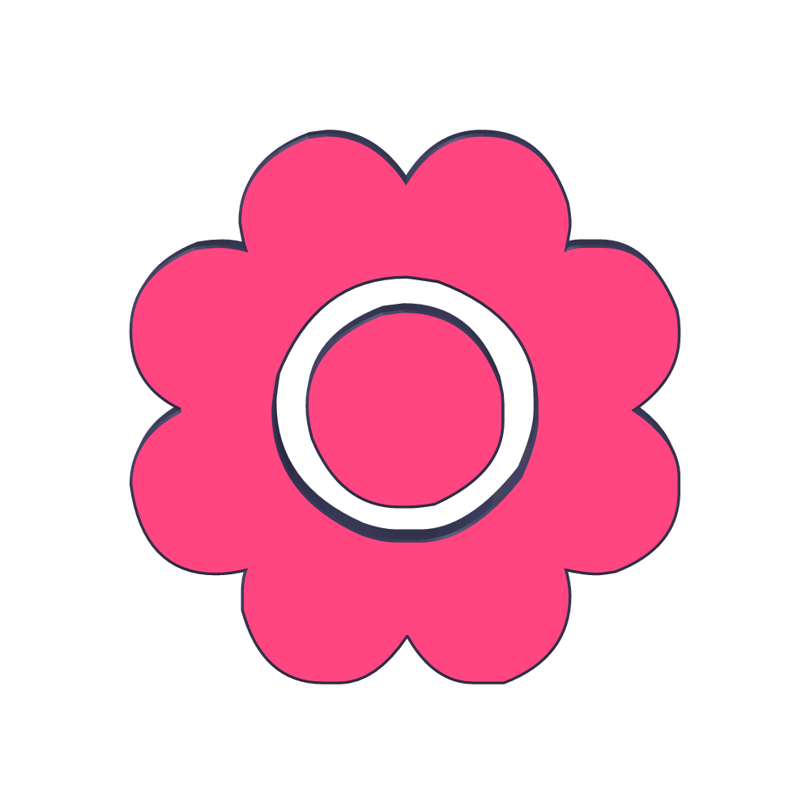
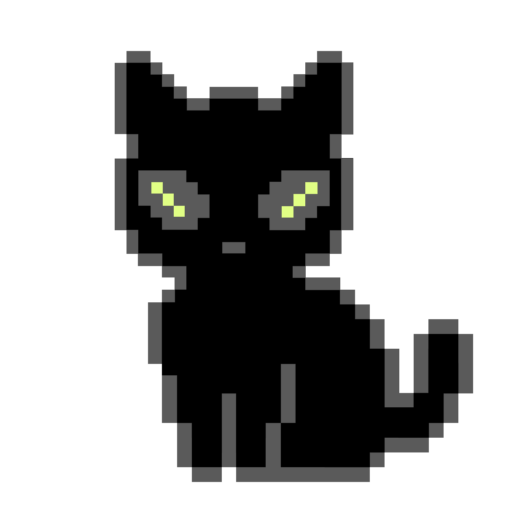

Welcome to zeesego !!( ˶ˆᗜˆ˵ )

Haii there!!1!1! U can call me zee! I’m just an 18 year old gal who loves to make anything that is heavily customizable lol! I originally created this website as a GWC summer pathways project, but I have always dreamed of having a personal website as a place to express myself. I am excited to develop this into something super kewl! xoxo, zee
Why “Zeesego?” : Lets break it down. 'Zee' + 'ego' is 'my name' + 'ego', so its basically my ego. ego means "a person's sense of self-worth, conscious mind, or self-importance." On websites like pinterest and here, i take the aesthetics pretty seriously thereforeeee its a reflection of myself aka zee's ego, my identity (online in this case), therefore zeesego! I also like it bc its all soft letters lol, ok analysis done thx ♡♡♡
THINGS I LOVE LOVE LOVE
- reading
- music
- crafting
- coding
- TV/movies
- PINTEREST!
- traditional media (digicams, magazines, journals)
My Fandoms!
- ENHYPEN!1!!
- miraculous ladybug
- one tree hill
- dawsons creek
- the o.c.
- my little pony
- pusheen!
